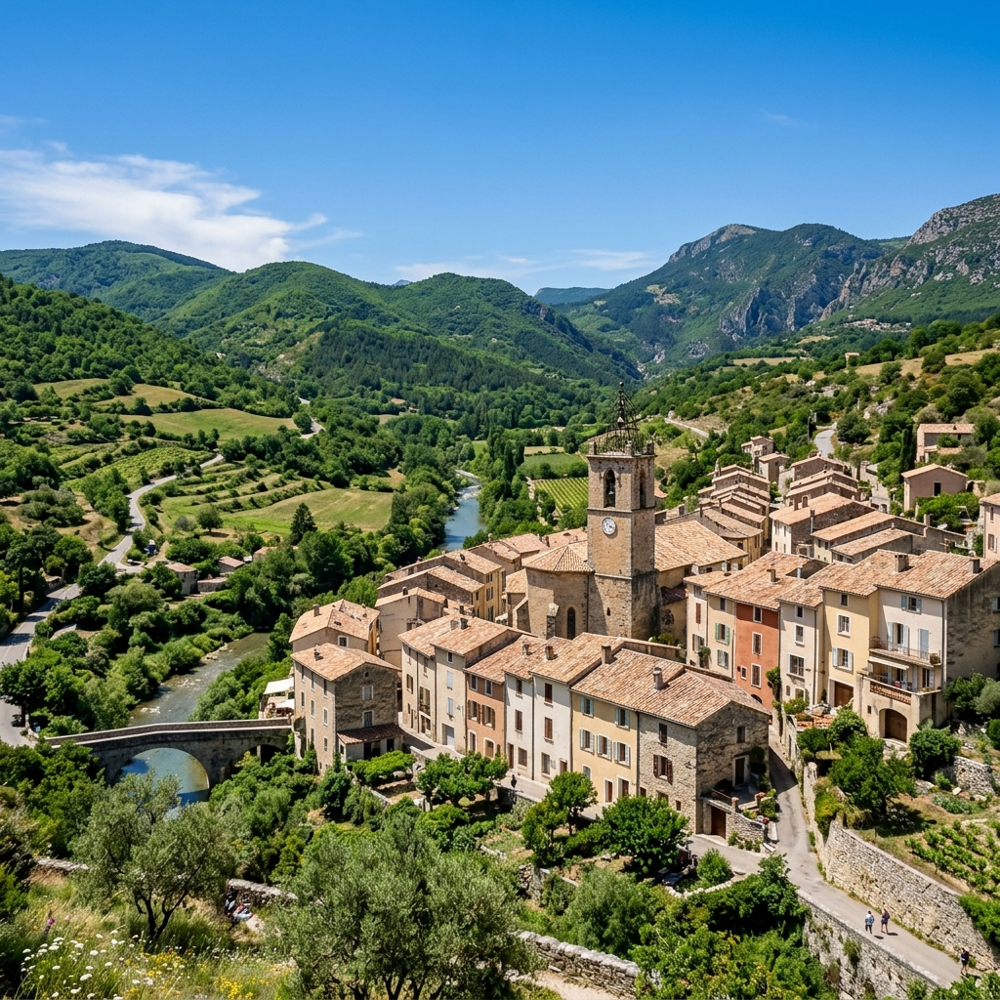

Barrême, village typique de Haute-Provence

Situé au carrefour des plus beaux reliefs de Haute-Provence, Barrême est un havre de paix idéal pour le vol libre. Découvrez l'histoire géologique, le patrimoine historique et le charme provençal de notre village d'accueil.
Localisation rapide
Situé à 118 km de Nice (via RN202), à 30 km de Digne-les-Bains (via RN202), et à 90 km de Grasse (via RN85 Route Napoléon).
Géologie & Fossiles
Riche en sites fossilifères, Barrême peut se prévaloir d'avoir donné son nom à une époque de l'ère secondaire, le Barrêmien. Ne manquez pas de visiter son musée géologique, basé sur la collection du paléontologue Louis Maurel.
Étape Impériale
Étape de la fameuse route Napoléon, Barrême s'enorgueillit de posséder la maison où l'Empereur passa la nuit du 4 mars 1815, comme le rappelle une plaque commémorative sur la façade du bâtiment.
La Lavande Fine
Autrefois réputé pour ses distilleries, il existe toujours un label de qualité réputé sous le nom de "lavande fine de Barrême", symbole du savoir-faire et du terroir provençal de la vallée.
Charme Provençal
Avec sa place de l'église plantée de platanes, sa fontaine ronde à quatre jets et ses ruelles transversales bordées de belles maisons en pierre, Barrême offre une ambiance chaleureuse typique du Sud.
Balade au bord de l'Asse
Empruntez le charmant chemin ombragé de peupliers qui longe la rivière (l'Asse de Moriez). Vous y profiterez d'une vue ravissante sur les façades pastel du village adossées à sa colline verdoyante — un lieu très prisé par les amateurs de calme, de nature et de pêche.
Plan du village & Commerces
Pour repérer l'école de parapente, les commerces et les points de restauration à Barrême, téléchargez le plan officiel ou consultez notre liste détaillée.
Actualités
Formations et Stages Saison 2026
Les inscriptions pour la saison de vol libre 2026 sont officiellement ouvertes chez Haut les Mains. Rejoignez-nous pour apprendre à voler en Provence.